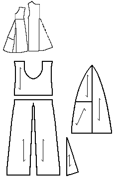

Pattern drawing based on N�rlundThis is a child's garment made of front and back pieces with two gores in the center, but no side gores. An odd note about the front piece is the separate torso piece to which the skirt pieces have been attached. This is probably for reasons of economy since it appears that several portions of this outfit have been pieced together. Enough of both sleeves have survived to determine that they are narrow, and have no gusset where they attach to the rest of the outfit. There is a short cut at the wrist. The edges have been turned, but there is no indication of stitching or overcasting, suggesting that this garment was lined.
The length from shoulder to hem is 49 cm (19.3"), the waist is 47.5 cm (18.7") in circumference, and the circumference of the bottom edge is 105 cm (41.3"). The armhole is 25 cm (9.8") around, and the neckhole is is 42 cm (16.5").
The material is a brown, fine textured fourshaft twilled frieze.
Go to Tunic Page; Herjolsnes Site Page
Some Clothing of the Middle Ages -- Tunics -- Herjolfsnes 62, by I. Marc Carlson, Copyright 1997 This code is given for the free exchange of information, provided the Author's Name is included in all future revisions, and no money change hands-